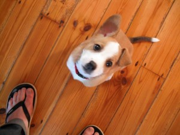
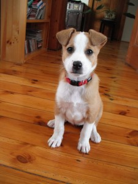
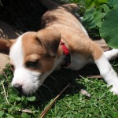
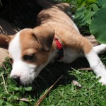
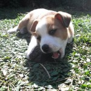

Biting,House Training,Training
30 August 2010 | Comments Off
The Roxy Socialisation Program continues apace.
We took her to a (more people than expected) braai yesterday, and she had a great time. Lots of running around and interacting with people and small people and cats (ahem).
She also enjoyed licking the braai grid (after use!) and drinking dirty sink water. As one does.
Her next set of injections are due in two weeks, then we can take her to The Outside World.
I think she is going to Love It.
Walkies will wock the casbah.

She seems to mostly have stopped chowing jeans. Or at least can be distracted / stopped with a “Sit.”
She’s still chasing the cats a bit (them running away = want to play in Roxy language), but she responds well to a “Sit!” even when faced with catversity (catversary?).
There are very few “accidents” in the house now. Instead she goes to the back door and sits there. And sometimes mews a little.
Current command list (all currently work without opening a terminal window or prefixing each one with sudo)
- Come
- Sit
- Stay
- Down
- Leave it
- Drop it
- (Go to) bed / house (kennel)
We’re pretty much still doing hand signals for all of them, but are using words for Come, Sit, Stay, Down along with then hands.
Is fun!
Roxy clever!

Photos
27 August 2010 | Comments Off
The ears in action (apologies for blurriness):

Letting sleeping dog lie:

Sit!

Cute sleeping pose:

Training
27 August 2010 | Comments Off
Ha! It’s funny because it’s true. Quote from the Teach Yourself Dog Training book (I’ve been reading a fair bit of dog literature (i.e. books about dogs, not books for dogs)):
As with children, attention-seeking behaviour is best ignored. The trouble with this theory is that attention-seeking puppies are so cute.
Biting,Thangs Roxy Lurve,Training
25 August 2010 | Comments Off
First in an ongoing series: Thangs Roxy Lurve.
- Ham and Tongue from P&P
- Unidentifiable bits of Ostrich from Pet Shop
- digging holes in the garden, under the deck where I can’t reach her
In other news: she’s biting my feet less, which is good.
Still chewing my trousers a bit, though.
Arf!
Photos,Site news
23 August 2010 | 1 Comment
I’ve been asked a few times the perfectly natural question “what is she?”
Dog. 100%.
She’s a crossbreed of two crossbreeds.
Here’s the ma and pa, respectively.


We are really hoping that Roxy’s ears get the awesome one-up-one-down of her dad. It’s happening a little already, so signs are good :).
ION: I’ve added some date bits to the sidebar, for reference.
On Your Own Time,Training
22 August 2010 | Comments Off
Roxy continues to amuse and entertain and be lovely.
She’s still very friendly and excited to meet people and this pleases me.
We’re giving her training sessions each day before each meal.
In the mornings, evenings, and weekends this means me and puppy mummy.
We stand at opposite ends of the study/lounge/kitchen area and take turns calling her to us for some training goodness.
Like a game of dog tennis.
It is awesome.
At the moment we’re doing Sit, Stay, Down.
Roxy is clever! The dog books / sites do not lie! Training is fun!
Being a puppy daddy is happy making.
Sad Face
On Friday last week I had a meeting thing at 10 and another at 2.
I thought I’d have at least an hour between them for some eating, weeing, and playing (for Roxy and for me).
My 10 ran over bigtime, and I practically had to run in, feed her, run out. And I was still ten minutes late for the 2 meeting!
I felt like a very bad puppy daddy. 
And I had separation anxiety while I was out, never mind her!
An an antidote, have some pictures of Roxy acting a bit mad in the garden:
 

Don’t be a pussy
In other news, she appears to be learning to fight / play like cat.
She copies Sproing’s one paw punch.
We saw it in action a lot yesterday when we went to visit Anna and her very well behaved, but very energetic, Border Collie – Maneo.
It’s very interesting to watch Roxy’s reactions to other dogs.
She spent the fist hour hiding under the couch and yelping a lot.
She spent the last hour climbing over his face and biting his ears.
She slept very, very, well last night!
Cute
17 August 2010 | Comments Off
And cute.
Today’s top dreams, in order:
- eating stuff;
- barking at stuff;
- running.
Dog takes on Human stuff,Playtime,Training
17 August 2010 | 2 Comments
New favourite toy: ice cube (the solid water, not the rapper)!
It slides!
It wets!
It… um… is lickable!
In other news: training is progressing at a leisurely pace.
She’s a bit too young for proper book learning, ayup, but she’s sitting and coming and sometimes staying, so us puppy parents are proper proud of our pstudent.
At the moment, she’s all depressed and is hiding in her kennel*.
This is because today is Collar Day.
As in: it goes on and it stays on.
______________________________
* – the kennel has now been roofed. Yes, it is still inside. Yes, it is still next to the bed. No, it will not stay there forever. Yes, we are going to move it a little each day until it’s in its actual spot. Thank you for your attention. End transmission.
House Training,On Your Own Time,Photos
16 August 2010 | 2 Comments
Most recent challenge: collar.
We haz a very cute red one (photo below) that Roxy, of course, hates.
She goes into this weird epileptic-type fit once she realises she’s got it on, then flumps down somewhere and looks all depressed. Poor puppy!
We have adapted the kennel.
She’s an inside dog, so kennelling outside seems silly.
The kennel currently lives, roofless, next to the bed, with her dog bed in it.
She loves it!
After the next week or two, we’re going to put the roof back on and move the kennel into a corner.
Slowly, slowly, catch-y soft monkey. Dog. Thing.
After that, it gets a door on the front. It’s all about crating.
It seemed a bit mental to me at first, but now I’m getting the idea. Safe, quiet, place and all that.
Finally managing to find some time to read the dog training book we bought.
It’s got some good training techniques, but lots of it is wrapped in odd hippy new-age stuff.
Hmm.
Also: photos!



Dog takes on Human stuff
13 August 2010 | Comments Off
Hip hop on the hifi.
The speakers are quite far apart, so the stereo is quite effective.
You have to keep switching your view from one speaker to the other.
Also, you have to look for the voices.
Which must be behind the hifi.
Or in the hallway.
Cute.
Word.


{kind=link}
{kind=link}
{kind=link}